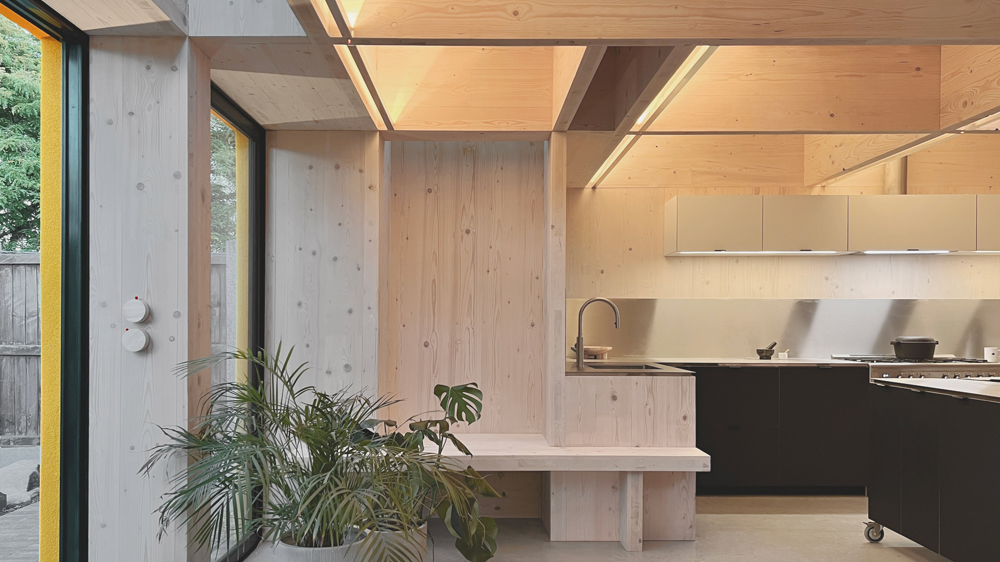
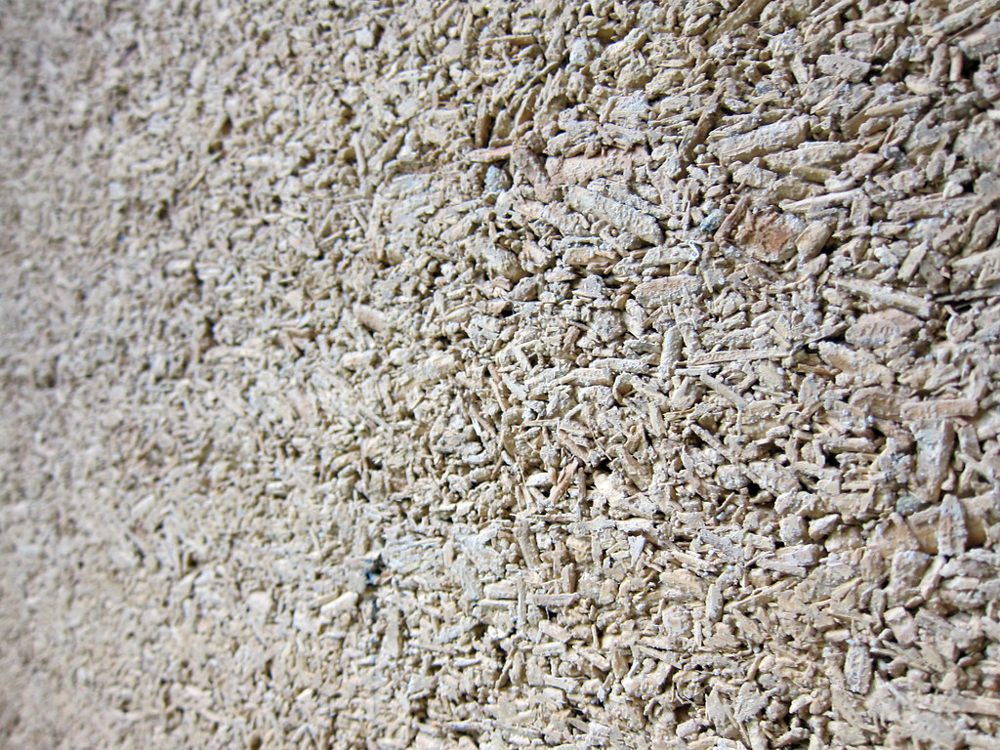
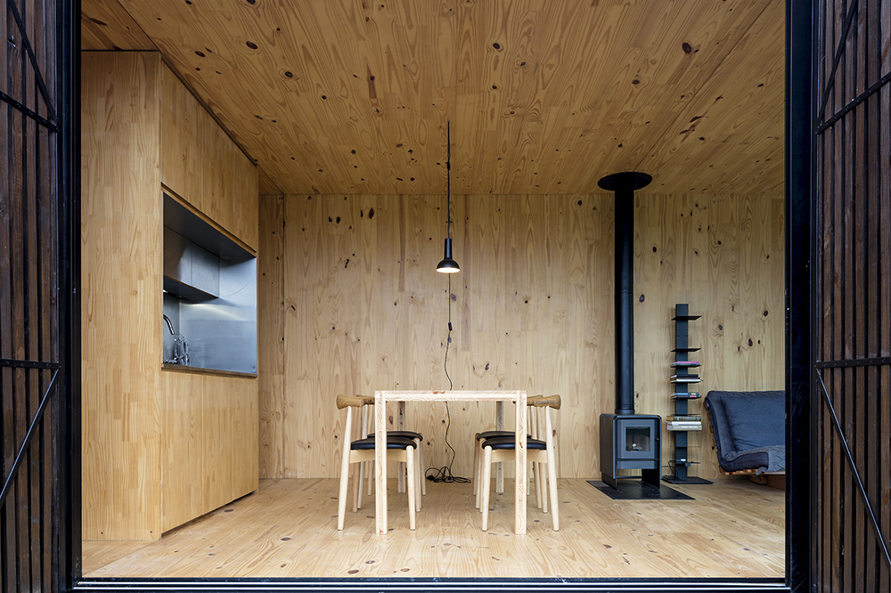

Een portfolio van innovatie en duurzaamheid

Integratie van kruislaaghout voor optimale thermische prestaties en constructieve efficiëntie.

Toepassing van kalkhennep voor een gezond binnenklimaat en minimale milieu-impact.

Precisie-engineering en prefabricage voor snelle en duurzame bouw.